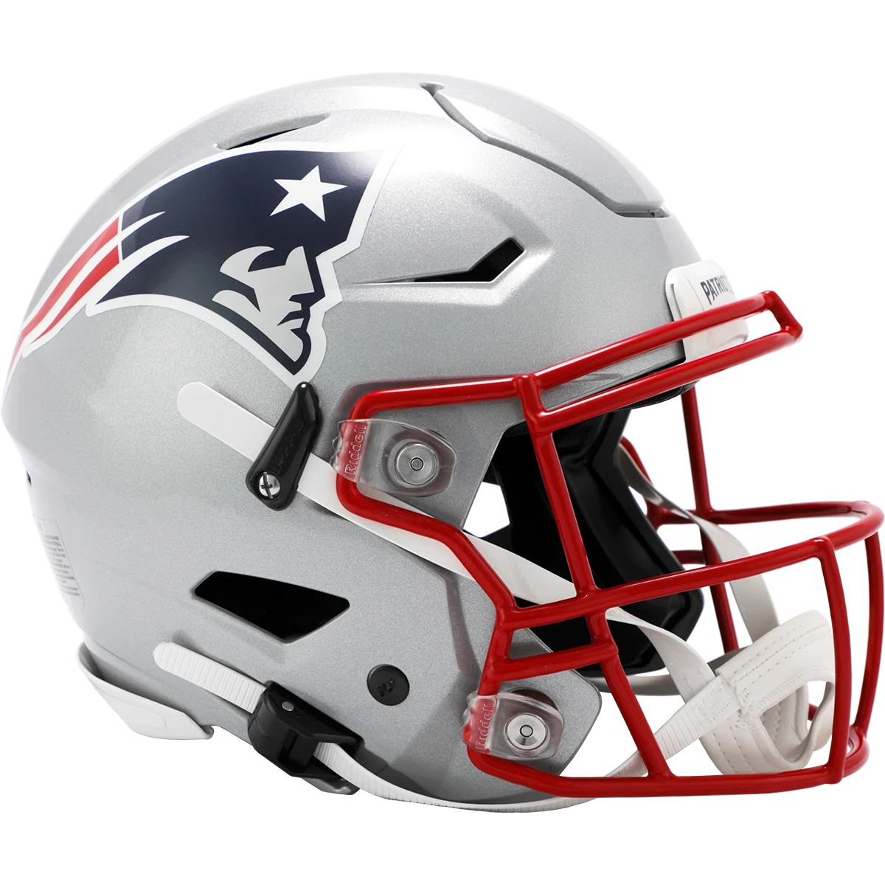

2023 · Frankfurt
Football arrived in Germany.
The Patriots played the Indianapolis Colts in Frankfurt. The game gave the partnership a shared stage in Germany and put the team's international push on the ground.
Lufthansa × New England Patriots · Year four
Lufthansa is the Patriots' official international airline as the team builds its presence in Germany.

The partnership
For the last four years, Lufthansa and the New England Patriots have worked together as both brands expand across the Atlantic. The Patriots are growing their audience in Germany. Lufthansa is growing its presence in Boston. Each side brings the other into its home market.
As Germany's airline, Lufthansa gives the partnership a natural point of entry into the country. The Patriots bring one of America's best-known sports franchises to that conversation.
2023 · Frankfurt
The Patriots played the Indianapolis Colts in Frankfurt. The game gave the partnership a shared stage in Germany and put the team's international push on the ground.
Four years · Two directions
Each year, sweepstakes have invited fans to travel between Boston and Germany, opening the relationship to people on both sides of the route.
Berlin · Munich · Frankfurt
Activations in Berlin, Munich, and Frankfurt have brought the Patriots into Lufthansa's home market through live moments built around travel, football, and place.
Year four
The fourth year turns the partnership into a shared journey. Lufthansa will fly the entire New England Patriots team, carrying the relationship from campaign partner to the airline that gets the team there.